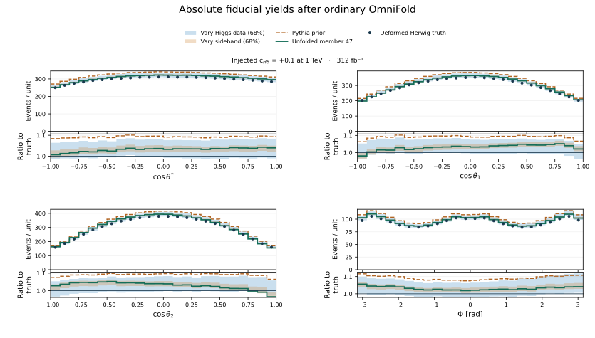
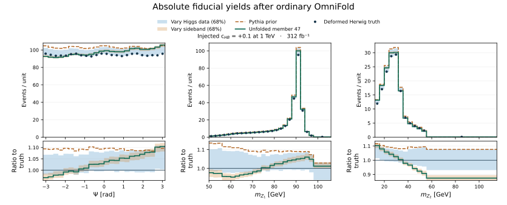
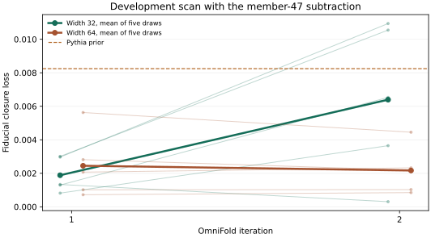
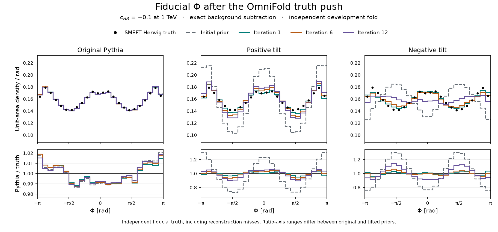
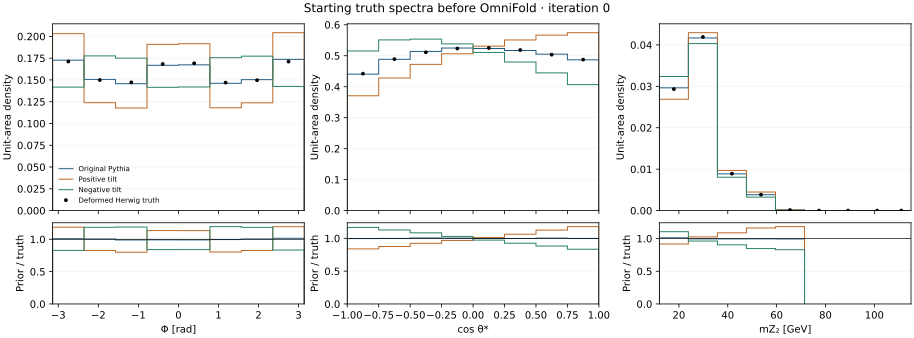

Member 47 · 312 fb⁻¹ · 20 November 2026 · 15:21 UTC
Ordinary OmniFold closure
At the selected width 64, member 47 unfolds to 599.09 fiducial events against 592.87 for injected Herwig.
Return to slides · Nominal background removal · Network validation by iteration
Run 3 closure with one iteration
At width 64 the fiducial yield differs from truth by 0.24 combined standard deviations. The largest normalized shape residual is 2.72, inside the simultaneous 95% threshold of 3.49.
Conditional uncertainty bands, paired development scan and all new training diagnostics
Earlier width-32 pilot · scans, spectra and uncertainty ensembles
Statistical variation of the unfolding
Each ensemble varies one input at a time. The first fixes the member-47 correction and purity and varies Higgs-window data. The second fixes member-47 Higgs data and varies the sideband-derived subtraction. The central unfolding belongs to both ensembles.
| Varying input | Draws | Median fiducial yield | 16th–84th percentiles | Sample SD | Mean − truth (events) | Closer shapes (of 7) |
|---|---|---|---|---|---|---|
| Higgs-window data | 100 | 612.67 | 589.37–638.52 | 24.53 | +21.33 | 3 |
| Sideband subtraction | 100 | 612.40 | 603.38–621.21 | 9.20 | +19.51 | 1 |
Shading shows pointwise intervals. Unit-area plots normalize each unfolded spectrum before taking its percentiles. The mean yield bias compares with deformed Herwig truth. The shape comparison averages the normalized spectra across draws. The fitted spectra share simulation and their bins are correlated. Each interval describes its conditional experiment.
Yield and shape comparisons with both conditional bands (PDF)
Fiducial closure in member 47
The Pythia prior predicts 647.55 fiducial events. Member 47 unfolds to 611.69, compared with 592.87 in the deformed Herwig reference. The nominal shows a smaller unit-area shape discrepancy in 1 of seven projections. The yield-sensitive closure loss is 0.00166, compared with 0.00854 for the prior.


All seven nominal yield and unit-area comparisons (PDF)
| Fiducial observable | Prior shape distance | Unfolded shape distance |
|---|---|---|
| Φ | 0.0048 | 0.0041 |
| Ψ | 0.0019 | 0.0165 |
| cos θ₁ | 0.0023 | 0.0050 |
| cos θ₂ | 0.0018 | 0.0064 |
| cos θ* | 0.0013 | 0.0033 |
| mZ₁ | 0.0020 | 0.0113 |
| mZ₂ | 0.0034 | 0.0167 |
Shape distance is half the sum of the absolute differences between unit-area bin fractions, at the original binning. Each comparison tests a one-dimensional projection. The nominal is an ensemble member selected for typical reconstructed counts and background shapes.
Refolding and training checks
In the reconstructed Higgs window, the purity-weighted data give 424.34 events and the refolded signal gives 423.52. The closure split checks the mean shape ratio against unity. Validation BCE uses class-normalized signed weights. The constant-classifier value is ln(2).
| Iteration | Stage | Ensemble validation BCE | Mean closure-split shape ratio |
|---|---|---|---|
| 1 | reco_pull | 0.69060 | 0.9969 |
| 1 | truth_push | 0.69262 | 1.0011 |
| 1 | reco_likelihood | 0.69271 | 0.9988 |
Training curves, member comparisons, raw-score reliability, refolding and closure (PDF)
Run 3–sized pilot and iteration choice
The Run 3–sized pilot compared one and two iterations. Its yield-sensitive score favored 1 iteration with two hidden layers of 32 neurons for the reconstructed-data classifier. Five development pseudo-experiments each used member 47’s background subtraction. Each candidate used the same draws, initial seeds and signed Pythia signal simulation. This narrow scan leaves convergence and sensitivity to the starting prior unresolved. The high-statistics study on this page measures truth-level shape bias and the spread from multiple starting priors through iteration 12. The two conditional ensembles on this page describe the pilot configuration.

| Reco width | Iterations | Mean closure loss |
|---|---|---|
| 32 | 1 | 0.00188 |
| 32 | 2 | 0.00639 |
| 64 | 1 | 0.00245 |
| 64 | 2 | 0.00217 |
The Pythia prior has loss 0.00824. For each truth projection we group four original bins at a time and compare expected yields with the deformed development truth. We sum squared bin deviations divided by the larger of the target bin yield and one event, then divide by the total target yield. The selection averages this score across seven projections and five draws. Lower values indicate closer agreement.
Each of the three training stages uses four networks. The truth-push and reconstructed-likelihood classifiers use four hidden layers of width 1024. Training uses signed simulation weights, up to 64 optimizer updates per member per iteration, zero regularization and raw classifier ratios.
Original SM Pythia through OmniFold
The first update moves the expected fiducial yield from 648.16 to 593.26 events against 592.86 for injected Herwig. The fiducial Φ shape distance changes from 0.454% to 0.411%. On independent detector-level Herwig events the first update gains 1.761 expected log-likelihood units, including 1.726 from the rate.
Truth spectra, refolding and likelihood through all 12 iterations
Fiducial Φ through the truth push
Φ has the largest unit-area shape distance among the seven observables when the unmodified Pythia prior is compared with the deformed Herwig truth. All spectra use independent fiducial events. The upper panels show normalized distributions averaged over three training seeds. The lower panels divide by the Herwig target.

| Iteration | Original Pythia | Positive tilt | Negative tilt | Largest difference between priors in Φ |
|---|---|---|---|---|
| 0 | 0.45% | 8.66% | 8.78% | 17.44% |
| 1 | 0.41% | 0.92% | 0.91% | 1.81% |
| 2 | 0.44% | 1.07% | 0.93% | 1.93% |
| 6 | 0.44% | 1.67% | 1.21% | 2.82% |
| 12 | 0.41% | 2.50% | 3.48% | 5.96% |
Entries are total variation distances between unit-area Φ spectra. The first update removes most of both imposed tilts. Subsequent updates increase the separation between these priors. The original Pythia spectrum already starts close to Herwig. Iteration 1 is a candidate for independent confirmation before the fitted-background check.
Browse iterations 0–12 and the range across seeds · All spectra and absolute yields (PDF) · Convergence in the seven observables, their correlations and multivariate projections (PDF)
High-statistics convergence study
The primary closure test uses exact subtraction in the pooled signed Herwig templates. Generator labels identify continuum ZZ and reconstructed ggF outside the fiducial definition. Independent truth includes fiducial signal events missed at reconstruction.
| Development sample | Entries |
|---|---|
| Herwig reconstructed fiducial signal | 2,459,289 |
| Pythia fiducial response sample | 3,855,728 |
| Independent Herwig fiducial truth | 1,773,266 |
Four reco-pull configurations were each tested on two starting priors. Mean validation loss favored four hidden layers of 1024 neurons and a learning rate of 0.0003. Each stage uses an ensemble of four networks. All nine trajectories completed 12 truth pushes, spanning three starting priors and three initialization seeds.

Before unfolding, the Φ shape distance from Herwig is 0.45% for nominal Pythia and 8.66% and 8.78% for the two alternative priors. Shape distance is half the sum of absolute differences in normalized bin fractions.